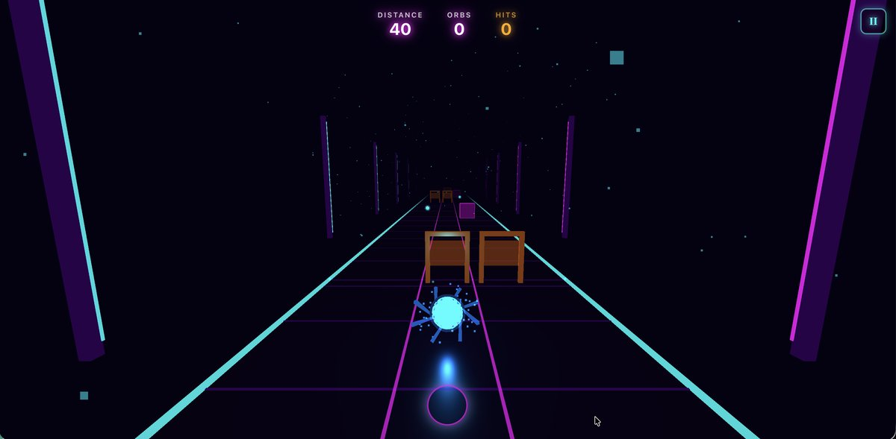

Levels, Menus and the Shop



The Question I Was Chasing
I wanted to find out whether a skill-based runner could hold someone past the first two minutes. Plenty of rhythm games feel great for ninety seconds and then you're done. I wanted to see what it takes to earn a third and fourth run.
My Part in It
- The runner loop, the stage structure, and the rules for unlocking things
- Stage Mode pacing, star gates, boosters, and working out what a coin is actually worth
- All the code: gameplay, UI flow, saving, so I could test the loop properly
Getting Past the Two-Minute Mark
Moment-to-moment feel is the easy part of a runner. You can get that right in a weekend. Keeping someone there is a different job. I had to add progression and things worth unlocking without cluttering up the one thing that made it fun in the first place: the rhythm.
What Made the Cut
- Stage Mode: 15 levels, unlocked with stars
- Free Run, with boosters: Magnet, Shield, Speed Boost
- A coin earn rate and skin prices tuned to give you a reason to run again
- A difficulty curve I rebuilt more than once across the early and mid game
Working Solo
No one to hand anything to, so every design decision went straight into gameplay rules, stage data and UI states, then I re-tested the levels around it to check I hadn't broken something two stages earlier.
Decisions I Had to Defend
Stars gate progress, not a score threshold
You unlock levels by earning stars rather than beating a points target. Stars are legible: you know exactly how well you did and what you're missing. What it costs: I had to hand-tune star thresholds per level instead of writing one formula, which is slow and unglamorous work. But a score target just tells you "not enough", and that's a worse thing to tell someone who's about to quit.
Cosmetics only in the shop
Coins buy skins. They don't buy easier levels or extra lives. What it costs: a weaker reason to grind, since power would motivate harder than looks. I kept it cosmetic because the moment currency buys difficulty, every balance decision after that is really an economy decision, and a rhythm game should be about the rhythm.
Two modes, not one
Stage Mode carries the progression; Free Run is where the boosters live and you can just play. What it costs: two things to balance instead of one, and Free Run splits attention away from the levels. Worth it, because people who bounced off a hard stage went to Free Run instead of closing the tab.
What I Was Aiming For
- Early levels teach you the game without a wall
- Progression gives you something to get good at before it gives you rewards
- Skins and boosters add to a run without getting in the way of it
- It stays smooth in a browser, run after run
How It Turned Out
What Changed Along the Way
People kept quitting in the same place: levels 3 to 5, where the note density jumped before anyone had really learned to read lanes. I flattened that stretch out so the game teaches you properly before it starts testing you. Obvious in hindsight; invisible until I watched someone play.
Still On the List
- Better mobile controls, and a proper look at performance
- Small weekly challenges to bring people back
- More skins worth chasing, and progression that shows off more
Go play it
It's up and playable. See how far you get before the difficulty starts biting.
Play Beat Runner